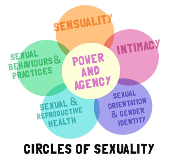

Sexuality: WTF Is It, Anyway?
by

The term "sexuality" can be used a lot like the word "sex." They're both terms we say and hear a lot, but which often aren't clearly defined, or even defined at all. We can take for granted that everyone, including ourselves, knows what terms like this mean, a heck of an assumption to make with something that covers a lot of really important things and can feel as murky as Lake Erie.
So, what is sexuality all about? You might say it's about our bodies or our hormones, about our feelings and our relationships, or about touching and being touched. You might think it's about doing or engaging in one kind of sex or any kind of sex, or about wanting, seeking out or experiencing certain kinds of pleasure. You might say it's about parts of our identity, like our gender identity or sexual orientation. You might say it's about reproduction: about making babies (or not). You might say it's about our desires to be close to -- or far away from -- other people in ways we define or experience as sexual, or about feeling horny, lusty, tingly, mingly, hungry, itchy, twitchy or whatever words you use to express a strong feeling of "I can haz sex NOW, plz."
If any one of those things were your answers, you're right. If all or most of those things were your answers, you're even more right (and may not even need to read this article at all: go get outside for a change, wouldya?). Sexuality is BIG. Mount Everest big: that's why trying to scale it without a guide or two doesn't go so well for most people. It's a lot bigger than it can look and certainly a lot bigger than it's often presented by most places and in most ways we see it presented. It's complex as all get-out, both because it's so big, and also because it's about everyone, and as a whole people, we're all incredibly different so something that's about all of us is always going to be seriously complicated, not simplistic.
As with anything this big, there are a lot of ways we can talk about what sexuality is and can be. There's no one exactly-right model when it comes to defining sexuality: we're going to talk about it a couple of ways here, based on where we're currently at with definitions in comprehensive sex education and sexology, but if neither of them feels right to you, that probably means these models just don't fit you well, rather than meaning you're wrong. Models or definitions of sexuality can and often do change over time, especially as we learn more and more about everyone's sexualities. Even in just the last 50 years, the way we talk about sexuality and the models we create for it have changed a lot: in the next 50 years, it may change, too.
Sexuality, as we know so far, is a mix of many different things in varying proportions: things that are physical, chemical, emotional, interpersonal, identity-based, intellectual, social and cultural, and that mix is different for, and unique to, everyone. Sexuality also isn't something that is technically “adult,” or something that pops out of the blue when anyone reaches puberty or a certain age: no one isn't sexual one day, then the next day, suddenly is because they've reached a certain age, had sex with a partner or sprouted hair in places they didn't have it last month. Even though the sexualities of people tend to vary when it comes to age and development -- infant sexuality, for instance, is a very different thing than adolescent or young adult sexuality, which can be a very different thing from the sexualities of people in their 60s or 70s -- it’s been with all of us in some way from the day we were born, and maybe even before, believe it or not.
Sexuality: Key Ingredients for a Very Adaptible Recipe
What can sexuality be made of? Any or all of the following:
The physical: The development, health and function of what are considered our internal and external sexual organs and reproductive systems and our unique experiences with that development, health and function, our brain and nervous system (the biggest drivers of sexual arousal and function), and the whole of our bodies. The experience of our senses -- of hearing, tasting, touching, feeling and seeing -- are also part of our sexuality, even though they are part of our whole lives and life experience, not just our sexualities. The experience of our sexual responses and something often called "skin hunger," the human desire to be touched. Advocates for Youth points out that teens and young adults often experience less touch from family members than they did as children, and so people often don't recognize how big a part just wanting to be touched can play when it comes to young people and their developing sexuality.
Another part of the physical aspect of sexuality is information about our sexual anatomy, and our experiences with and of reproduction and our reproductive systems, of our reproductive and sexual health are also part of the physical part of sexuality, as well as playing a role in other parts of our sexual whole, including the chemical, social and cultural.
The chemical: AKA, hormones. Hormones take the blame all too often for hasty or poor sexual choices: choices there seem no other way of accounting for, as in "Those dirty hormones made me do it!" Hormones are not anything close to all of what our sexuality is -- nor are they things that can make people do sexual things against their will or are a sound scapegoat for poor sexual decision-making -- but they can certainly play a part. "Sex" hormones include testosterone, a big chemical libido driver for everyone, and estrogen, but there are also others which take part in sexuality that you experience even without sexual activity, like progesterone, adrenaline, serotonin, vasopressin, oxytocin (which is a real thing, but has been the source of many a myth), dopamine and endorphins. When people talk about sexual chemistry, some of what they mean is how we do or don't neurochemically respond when it comes to sex and sexual feelings, something -- unlike our sexual behaviour -- we don't have any control over and often may not even have much awareness of.
The emotional & intellectual: Our feelings, values and ideas about sexual development and sexual changes through life, body image, gender identity and sexual orientation issues, sexual desires and fantasies, sexual activity with oneself and/or with partners, sexual relationships and sexual self-image, the ways those may drive us sexually, and the way we feel about sexuality and sex as a whole, not just our own. How we may or do feel sexually attracted to others and how they may or do feel attracted to us is another piece of the emotional and intellectual, and our sexual fantasies are part of this, too, as are our sexual ideals: what we feel sex and sexuality are supposed to be or should be, either for ourselves or for everyone. Our gender identity and our sexual orientation are also big pieces of the emotional and intellectual aspects of our sexuality, as well as part of the social and interpersonal, cultural and physical parts of sexuality.
Feelings are a part of our sexuality in every and any sexual interaction or desire. Sometimes we'll hear people say they've had or want to have sex "without feelings," but the only way we could do that, really, is to cut our heads off. While we may not have, be open to or experience the same kinds of feelings in every sexual interaction, when we're alive and conscious at all, emotional feelings are always some part of the picture. We can't magically turn them off during any part of life, including with sex and sexuality.
The social and interpersonal: Your sexuality in the context of your relationships -- sexual partners or potential partners, but also friends and family -- and the influences those relationships have had and have now on your feelings about your sexuality, your sexual wants and needs from others, and your sexual choices with others and your ability to make them. This includes experiences with taking the emotional risks we do whenever we expose or express ourselves sexually with someone else: what has happened to us, for instance, in sharing sexual feelings or interest, or in being out about some part of our sexual selves. How others have expressed themselves sexually to us, including when we weren't expressing ourselves sexually with them, also plays a part here.
This piece is about what, if any, sexual relationships with others a person wants, seeks out or experiences, but also about all kinds of other relationships that tend to play a part in our sexuality, like the relationships we had and have with family members and friends. How all the people we are in any kind of relationship with treat or react to our sexuality is also a piece of this and the cultural aspects below.
The cultural: None of us can live in the world without being influenced by it. How the rest of the world -- including our peers, local and larger communities, your government, the media -- views sexuality, and all the parts of our sexuality, like our gender, our bodies, or the kinds of sexual relationships or experiences we have or want, is a part of our sexuality, as are our feelings, attitudes, and conformity or resistance to those views. How the world or some in it view our sexuality when it isn't even ours at all, but only their idea of it is also part of cultural influence on our sexuality.
In other words, this part is about what messages about sexuality we get overtly and covertly, what we feel or experience our culture allows and disallows, idealizes (says is good or right) or punishes (says is bad or wrong), what our culture tells us to feel comfortable with and tells us to be afraid of, the effect and influence it has on us, consciously and unconsciously, and where and how we and our own sexuality, sexual identity and ethics, body image, gender identity, orientation and relationships fits or doesn't within cultural attitudes towards, approaches to and presentations of sexuality. To give you one easy example, a lot of the words, the very language, and the approaches you're reading here are, themselves, cultural: someone from a very different culture or cultures than my own may write or conceptualize all of this very differently.
You might have noticed a lot of overlaps with things in each of those groups above, and for good reason. That's because we can't really compartmentalize those things much: we can't really put them each in tiny little boxes where everything always stays neatly in each box. One model for defining and explaining sexuality that's really helpful, and illustrates that overlapping well, is the Circles of Sexuality model, designed by Dr. Dennis M. Dailey. There are a lot of versions and explanations of this model, but the one I like best is from the Interagency Gender Working Group , which is what our version of the circles here is adapted from.

What's Inside the Circles of Sexuality
Sensuality: "Sense" is the key part of this word: we're talking about your physical senses and your awareness and experience of them. Sensuality also involves our awareness and experience of our bodies as a whole, including our body image, and our experiences, if any, of physically exploring the bodies of others, and not just with certain kinds of sex, like intercourse, recognized as capital-S Sex. Sensuality is about pleasure: seeking, exploring and experiencing pleasure, both as something we may receive or have, and as something we may give others or share with others.
Intimacy: Intimacy is a word sometimes people use as a euphemism for sex, like by saying someone was "intimate" with someone else to mean they had some kind of sex with them. Intimacy is certainly a part of the whole of sexuality and often part of people's experience of sex and sexuality through life, but when we say intimacy here, we're talking about the ability and desire for emotional closeness with other people, and as a part of sexuality, not as the whole of it. That can include sharing, caring, emotional risk-taking, and vulnerability. Emotional intimacy may not always occur with every sexual experience, and when it does, it doesn't always look or feel the same way for everyone, or with every experience -- including for two people sharing a sexual experience together at the same time -- nor happen to the same degree for every person or with every sexual experience. When and if we seek out sex with other people, we are usually seeking out intimacy, even if it's not the same kind of intimacy every time, or the same kind of intimacy someone else may be seeking. We're usually all looking to share something in which we're close to someone else in some way.
Sexual Orientation and Gender Identity: This is about a person's feeling, sense or understanding of who they are when it comes to their gender -- their feeling of being a man, a woman, neither, both, or a different way of experiencing gender altogether and the ways they express those feelings -- and when it comes to what gender of people, if any, they feel sexual desire about: who, based on (or not) gender, they feel sexually attracted to, whether or not they seek out or have the opportunity to be in sexual relationship with or not. Sexual orientation -- our sense of being queer or straight, homosexual, heterosexual, bisexual or asexual, and so forth -- and gender identity are obviously involved with each other, because they both have to do with gender, but one doesn't automatically determine the other, and how linked they are for each person can vary, as can how big a part they play in a person's sexuality.
Our biases, stereotypes or fears can play roles here, too, just like they can in all the other circles. In other words, ways that we think about other people or ourselves when it comes to gender or orientation -- just like ways we may think of others when it comes to ability or disability, race or ethnicity -- can also play a part in our sexuality. If that's tricky to get a grasp on for you, a good example of that is the idea some men have that that only gay men want to engage in receptive anal sex: many men of all orientations may have the desire to explore that or know they have enjoyed that, but those with that bias can find the bias plays a part in their sexuality around that activity, either making it something they desire but don't do because of homophobia and that makes them feel bad about their sexuality, or something they may find even more exciting, or taboo, because of that fear or bias. Ravishment fantasies can be another example of that, as can people using pornography that turns them on, but where doing what they're watching is something they'd feel disgusted by in real life. Sometimes things people feel most afraid of, or repulsed by, can be things that turn them on a lot.
Sexual and Reproductive Health: One’s capacity or ability (or lack thereof) to reproduce, feelings about and experiences with reproduction, and the behaviors and attitudes that play a part in sexual health and enjoyment. This includes the information we have about sexual anatomy, sexual activities, reproduction, contraception, STI prevention, and self-care, among others and the messages that information has given us about all of those things. This circle is also about our experiences of sexual wellness or illness, and how they influence our sexuality and sexual desires or experiences. Healthy sexual relationships are also a part of sexual and reproductive health.
- People who haven't had an orgasm
- People with disabilities, including sexual disabilities or developmental disabilities
- Old people
- Young people
- People who don't like the kinds of sex others do
- People who have never had a sexual partner
- People who don't ever want to have a sexual partner
- Your parents and grandparents
- People with genital injuries
- Sexual violence or abuse survivors
- People with mental illness
- Fat people
- Clergypeople
- People who are questioning
- People who don't meet cultural standards of beauty
- Conservative people
- Shy people
- People you don't find sexually attractive
- ...and so many more.
Sexual behaviors and practices: This is one of the easier pieces to grok: it's about what we or others actively do sexually to enact or express our sexuality; about who is doing what when it comes to their own body parts and/or those of a sexual partner or partners, sex toys or other objects. This part of sexuality won't always be a "do" or "have done" for everyone: some people may want or desire certain behaviours or practices, but not engage in them, or not yet engage in them, for any number of reasons, whether that's about lack of opportunity or ability, fear or something else. Even if someone doesn't or hasn't yet actively done something sexual, the behaviours and practices they are interested in or want often play a big part in their sexuality. This also isn't just about sex with partners: masturbation is part of this, too. What we do not want to do sexually can also be part of our sexuality and how we experience it, too.
Power and Agency: Power is the ability or capacity to do something, and can also be about strength or force, or the ability or capacity to exercise control over oneself or others. Agency is a sociological or philosophical term that addresses a person's capacity to act: what a person has the right, ability or power to do. How much power or agency each of us has in general and in specific situations varies a whole lot, in really big ways -- like based on what power and agency we may or may not have in the world based on how rich or poor we are, what color we are, what our gender is, how our bodies do or don't work -- and then in smaller, more situational ways, like in one given relationship.
Power and agency play a huge part in all aspects of sexuality, in the healthy stuff and the unhealthy stuff, which is why this version of the circles puts it right in the center. We can experience power and agency, and have them influence our sexuality from a "sense of self-worth and understanding of one’s [sexual] preferences and values, which enables a person to realize sexual well-being and health." We may or may not have, or may have or feel varying amounts of power or agency to influence, negotiate, decide, consent or decline when it comes to sexual experiences. We or others may also use power or agency to manipulate, control or harm others in our sexual experiences, too.
Not everyone's sexuality or the way they express it is healthy, and what's emotionally healthy or isn't tends to have a whole lot to do with power and agency. If we feel and use whatever power and agency we have when it comes to sex to care for ourselves and others, to seek out mutual pleasure and well-being, and it comes from an emotional place where we give ourselves and others high value and worth, then chances are good we're using or enacting our power and agency sexually in healthy ways.
On the other hand, people can also sexually use -- or more to the point, abuse -- power and agency to do others harm. For sure, sometimes people can use power and agency to try and influence others sexually in ways that aren't about trying to do harm -- or being so self-centered that one doesn't even consider the other person, which makes doing harm very likely -- or trying to control them, like flirting, which is usually harmless even though it is about trying to influence someone else around sex. As well, some people bring powerplay into their sexual lives in ways that in another context would usually be about doing harm, but where consent and mutual pleasure are present and prioritized, instead of dismissed or discounted, like for people who engage in consensual, mutually wanted BDSM activities.
But sexual violence like rape, molestation and incest, sexual harassment, forced prostitution, withholding sex as a way to try and manipulate harm or control (rather than declining sex because it isn't wanted), sexualization: these are all some things that come from an emotional place of devaluing, or not having value for, oneself and others, and about using power in ways with or around sex that are not healthy, neither for the person doing them or the people that person is doing them to. Power and agency is also in the middle of all of those other circles because how much power and agency people have, and what they do with power and agency, as well as how they are impacted by it, is connected to all of those other issues.
Phew! It's a lot to think about, we know. And there's more.
It might help to look at a model like that one and figure that the size of those circles might not all be the same for each person. For instance, one person's sexuality may be very influenced by reproducing or their experience with reproduction, while it may have little to do with someone else's. Some people's sexuality may not have yet involved, or may not ever involve, engaging in sexual behaviours with themselves or others; one person's sexuality may involve a lot of intimacy, while someone else's may not. And of course, how a model like this -- and the size of the circles and the places they connect -- looks for even one person may be very different when they're 15 than it is when they're 55. Our sexuality does not stay the same throughout our lives, so how it looks and feels, and what parts of it seem bigger, and which smaller, will often shift quite a few times in each of our lives.
Sexuality is a lot like an ecosystem: one change to one part of the system usually impacts other parts of it, and one tiny shift in one place can sometimes change the whole thing quite radically. And just like with ecosystems, the same shift in one system won't always have the same impact as it would in a different one: the great diversity of people, our lives and experiences -- and all of those pieces we've been talking about -- means that sexuality is also greatly diverse.
Even the language we or others use to describe our sexuality tends to reflect the kind of vast diversity we're talking about when it comes to sexuality.
When someone uses words to describe their sexuality, they may mostly or only use terms about sexual orientation and gender identity, like heterosexual (straight), homosexual (gay or lesbian or queer), bisexual or pansexual (queer, bi, pan, omni), asexual or questioning; or terms like cis gender, femme, butch, fey, trans, agender or genderqueer, or stick to terms about chromosomes or how people are assigned sex, like male, female or intersex. Or they might use words that talk more about their sexual behaviours or practices; about what they actively do sexually or find arousing in terms of sexual activities, like kinky, vanilla, foot lover, oral sex fangirl, pictophiliac (someone aroused by visual pornography) or arachibutyrophiliac (someone aroused by the sensation of peanut butter sticking to the roof of one's mouth: shared primarily to give you the most winning Scrabble word of ever).
Some people use terms that are about a sexual role they like to play, like bottom, top or switch. Some people may include their reproductive status or experiences in their terms for their sexual identity, like if they're a Mom or Dad, or if they've chosen to be childfree. Some may use words that focus on the kind of relationship they are in or want. Some people feel that one word describes, or should describe, their sexuality, like "male" or "straight," while another person feels like a word like that is way too broad to be useful or feel like it says anything at all about their sexuality. Of course, some people may, and do, use more than one of those kinds of terms based on what their sexuality feels like and how they identify with it. Someone might define their sexuality or their sexual selves as a trans-femme-lesbian-vanilla-Mom, for instance, while someone else may define themselves sexually as a hetero-kinky-poly-dude. Some people may not use any terms at all.
Too, one thing that trips a lot of people up is trying to figure out how to separate their sexuality from all the other parts of themselves and their lives; where sexuality ends and everything else begins. When I did our version of the circles, I made the text in them bleed outside the circles for a reason. I did that because often, we're not going to be able to draw very clear lines between our sexuality and the rest of who we are, what we feel and the lives we live. Sometimes it is clear-cut: sometimes we can identify things, situations or feelings that very clearly don't incite or involve our sexuality in any way. We can sometimes do the same with some things we know are a part of our sexuality, and seem to only or mostly: like things that we find very sexually arousing, but find totally boring, ridiculous or offensive in any other context.
Just like with models for sexual response, you get to come up with your own if you don't read or see a model that sounds like it really works for you. Sexuality itself involves some things we can't control or direct -- like our life histories, our feelings and our attractions -- but for the most part, a lot of our sexuality, and certainly how we define and direct it, is very much a Choose Your Own Adventure.
One person's sexuality, experience or understanding of sexuality can be radically different from another person's, but that doesn't mean one person is right and the other wrong, or that one person has a sexuality and the other doesn't.
Like anything made of people and our collective lives and experiences, sexuality is hella diverse, and while some sexualities (or more accurately, the way some sexualities are expressed or acted out) are physically, emotionally or interpersonally healthier than others, there's no right way of having one; no one sexuality that is the default, or the way sexuality "is," while others are deviations, derivatives or "perversions."
While it's important for any of us who talk about sexuality to define what we mean when we use that word, sexuality is really something we're often best defining on our own, for ourselves, and understanding as something that, while it has a lot of common threads among all people, is tremendously individual and unique. If it were anything but as diverse, varied, big and complicated as it is, people would have gotten bored with it long before now, and no one would ever come to a website like this one.